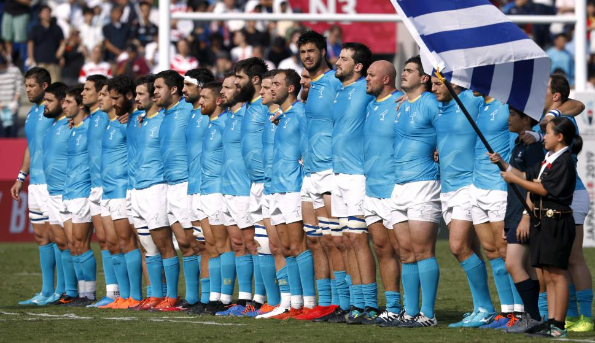

Historia del Rugby
El rugby se originó en Inglaterra en el siglo XIX. Se caracteriza por su intensidad física y su fuerte componente de trabajo en equipo.
Reglas Básicas
- 15 jugadores por equipo.
- El campo mide 100 metros de largo.
- El objetivo es apoyar la pelota en la zona de anotación (try).
Selecciones Históricas
All Blacks - Nueva Zelanda, ícono mundial del rugby.

Los Teros - Selección uruguaya en constante crecimiento.
Mejores Jugadores de la Temporada
| Jugador | País | Tries |
|---|---|---|
| Beauden Barrett | Nueva Zelanda | 12 |
| Emiliano Boffelli | Argentina | 9 |
| Nauel Bares | Uruguay | 19 |
Tabla de Posiciones - Selecciones
| Posición | Selección | Partidos Jugados | Puntos |
|---|---|---|---|
| 1 | All Blacks | 5 | 23 |
| 2 | Sudáfrica | 5 | 20 |
| 3 | Argentina | 5 | 18 |